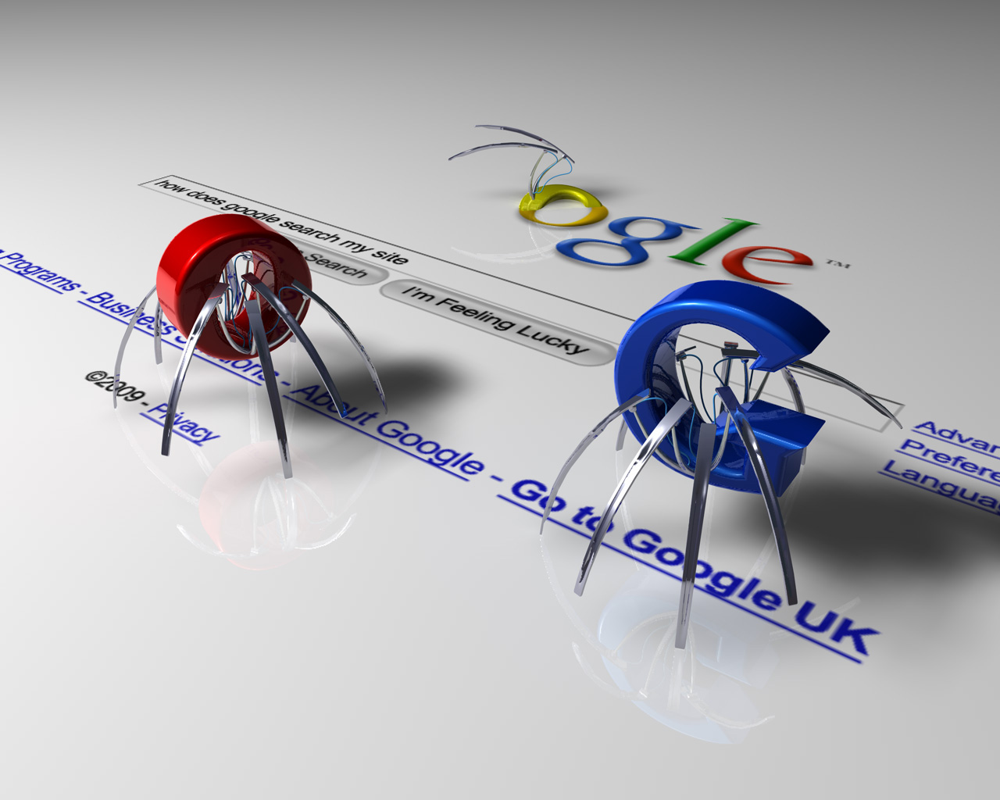

#6th Blog
Our Little Robot Minions.
Web robots are software applications that have been designed to do many automated tasks. The reason they are created is so that they can complete various tasks a lot quicker than a human can do manually. They are scripts that are designed to retrieve and analyse information all across the Web. Bots can be extremely useful - constantly updating your Facebook feeds, scanning information or help improve Google search results. They makes use of pattern matching using internet relay chats. The bots lurk in the background of chat groups and analyse what users are saying in order to then bring up various things mentioned by the user that then may be of use. There are many different types of bots, some are harmful and some useful to the internet. There are many types of useful bots such as: 1. Trading web robots: These robots are used for commercial gain. Finding the best deals out there for the user. Hotel booking websites, such as Trivago, use these types of bots in order to help their users find exactly what they are looking for. 2. Spider web robots: They are also known as Google bots. These bots sift through webpages all over the internet organizing and linking pages based on the Google algorithm. This is useful as when users Google something the information they are looking for is easy to find. 3. Media web robots: These bots try to provide the user with the latest news and updates. They can also be used in online messaging chatrooms in order to run the programs smoothly. However, there are also harmful web robots. These are used to breach security networks and are often used by hackers to create viruses or manipulate networks. They do not create a pleasant web experience for the user. 1. Download web robots: These are used to show webpages that the hacker wants to show the web user. Some things cannot be viewed unless users click on the link or accept the page terms and conditions. The user is then bombarded by a ton of unwanted information. 2. Hacker web robots: These types of bots are used to try to find weaknesses in websites and exploit these weaknesses for their own personal use. 3. Botnets: These make use of zombie computers; these are computers that have been taken over by hackers without the user’s knowledge. The bots are networks set up online by hackers and make use of the zombie computers to perform various malicious acts. 4. Spam web robots: These are used to create pop ups or to collect the users email address and spam the user with useless or unwanted information. This is often used by advertisement companies. Therefore, there are many different types of web robots and they can all be used for different purposes. Overall, the use of web robots is very important, and us as web designers must use them correctly.
